%load_ext autoreload
%autoreload 2link to source code
https://github.com/juliafairbank7/juliafairbank7.github.io/blob/main/posts/kernel-logistic-regression-post/KernelLogisticRegression.py
Overview of Kernel Logistic Regression
Regular logistic regression is a binary classification machine learning algorithm. One weakness of regular logistic regression is that the algorithm doesn’t work well with data that is not linearly separable. Kernel logistic regression is a technique that extends regular logistic regression to be compatible data that is not linearly separable.
Similar to other binary classification machine learning algorithms like perceptron and regular logistic regression, kernel logistic regression aims to predict the label of a data point based on some predictor variables.
Kernel logistic regression requires us to specify a kernel function and parameters for the kernel function. I’ll be using the radial basis function (RBF) kernel function. RBF takes in one parameter, gamma, which controls how “wiggly” the decision boundary should be. Larger gamma means a more wiggly decision boundary.
The algorithm uses a stochastic gradient descent to train the kernel logistic regression model, which is an iterative process. We can set the number of training iterations as well as the learning rate to control how much the parameters change on each update.
Once the kernel logistic regression model is fully trained, there will be an alpha value for each data point and one bias value.
Generating Non-Linearly Separable Dataset
Because kernel logisitic regression is a technique that extends regular logistic regression to be compatible data that is not linearly separable, let’s generate some non-linearly separable data!
from sklearn.datasets import make_moons, make_circles
from matplotlib import pyplot as plt
import numpy as np
np.seterr(all="ignore")
X, y = make_moons(50, shuffle = True, noise = 0.2)
plt.scatter(X[:,0], X[:,1], c = y)
labels = plt.gca().set(xlabel = "Feature 1", ylabel = "Feature 2")
plt.title("Testing Dataset")Text(0.5, 1.0, 'Testing Dataset')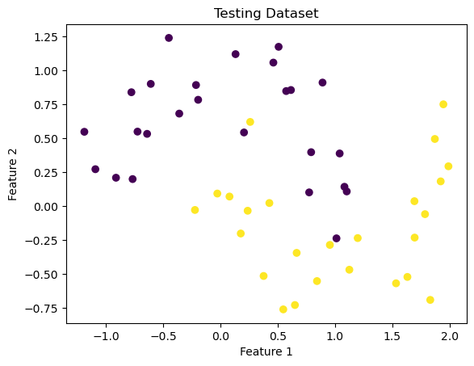
From this dataset, you can start to imagine what the non-linear classification/division might look like. Let’s see how the kernel logisitic regression algorithm attempts to classify that separation.
But first, we’re going to use a pre-implemented version of logistic regression and a visualization tool, so let’s import that.
from sklearn.linear_model import LogisticRegression
from mlxtend.plotting import plot_decision_regions
LR = LogisticRegression()
LR.fit(X, y)
plot_decision_regions(X, y, clf = LR)
title = plt.gca().set(title = f"Accuracy = {(LR.predict(X) == y).mean()}",
xlabel = "Feature 1",
ylabel = "Feature 2")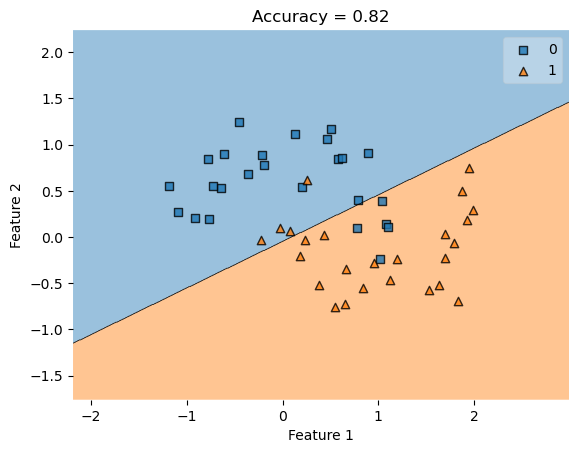
This graphs shows a linear regression classification of non-linearly separable data, which cannot perfectly separate non-linearly separable data. Now let’s try with kernel logisitic regression.
Applying Kernel Logistic Regression
from KernelLogisticRegression import KernelLogisticRegression
from sklearn.metrics.pairwise import rbf_kernel
KLR = KernelLogisticRegression(rbf_kernel, gamma = .1)
KLR.fit(X, y)
plot_decision_regions(X, y, clf = KLR)
title = plt.gca().set(title = f"Accuracy = {(KLR.predict(X) == y).mean()}",
xlabel = "Feature 1",
ylabel = "Feature 2")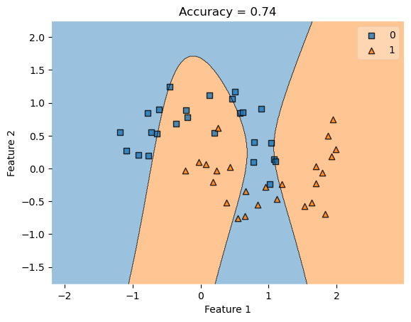
As you can see, the kernel logisitic regression creates organic, non-linear separations in an attempt to better classify the data. In comparing the accuracy of kernel logisitic regression to linear logistic regression, our accuracy has improved, making this a better classifier for non-linearly separable data.
Overview of the KLR Functions
fit()
KernelLogisticRegression.fit(X, y) is the main function that learns the optimal parameters \({v}\). To do this, the function first computes a kernel matrix of X with itself, which is used to minimize the empiricial risk and saved as \({v}\).
predict()
KernelLogisticRegression.predict(X) takes the dot product of the kernel matrix of X with the value \({v}\) from the fit() function, then turns dot product value into a binary value.
score()
KernelLogisticRegression.score(X, y) uses the predict() function to make a prediction matrix of \({X}\) and compute the accuracy.
Now, let’s experiment with this algorithm. Because we are using RBF, let’s try changing the value of gamma. As a reminder, a larger gamma means a more wiggly decision boundary.
Experimenting with Larger Gamma Values
KLR = KernelLogisticRegression(rbf_kernel, gamma = 10000)
KLR.fit(X, y)
plot_decision_regions(X, y, clf = KLR)
t = title = plt.gca().set(title = f"Accuracy = {KLR.score(X, y)}",
xlabel = "Feature 1",
ylabel = "Feature 2")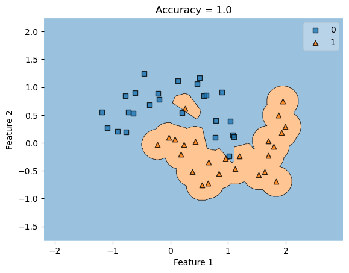
As you can see, the classifier draws an orange blob around the orange data points rather than drawing a line. This is sufficient to achieve 100% accuracy on the training data.
However, if we were to generate new data, we will see a lower accuracy as the classifier blog remains the same, depiste new data points being generated in different locations.
Generating a New Dataset
X, y = make_moons(200, shuffle = True, noise = 0.2)
plot_decision_regions(X, y, clf = KLR)
title = plt.gca().set(title = f"Accuracy = {KLR.score(X, y)}",
xlabel = "Feature 1",
ylabel = "Feature 2")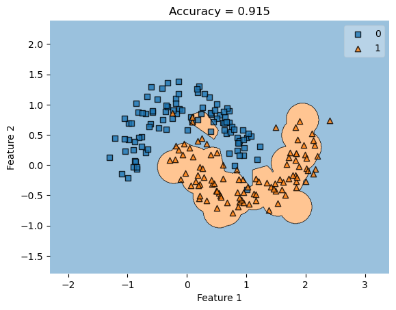
As you can see, the classifier from the first dataset remains the same, despite the new dataset and feature positions. This results in a lower accuracy score since this classifier isn’t made uniquely to fit this dataset.
Next, let’s try varying the noise, which is a parameter when we call make_moons. The noise determines how spread out the two crescents of points are. Let’s try changing the amount of noise to see the relationship between noise and gamma.
Experimenting with Noise
Noise = 0
X_lowNoise, y_lowNoise = make_moons(50, shuffle = True, noise = 0)
plt.scatter(X_lowNoise[:,0], X_lowNoise[:,1], c = y_lowNoise)
labels = plt.gca().set(xlabel = "Feature 1", ylabel = "Feature 2")
plt.title("Testing Dataset, Noise = 0")Text(0.5, 1.0, 'Testing Dataset, Noise = 0')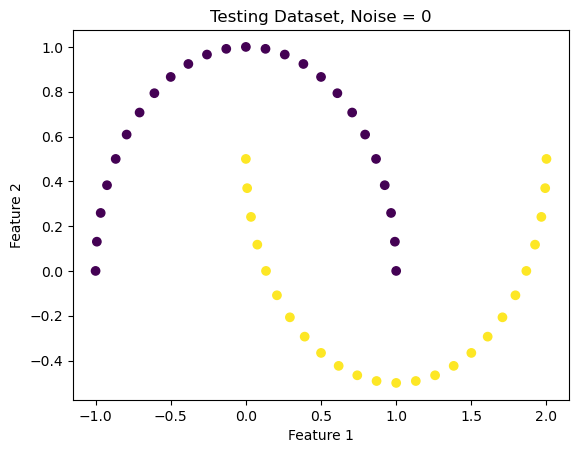
KLR_lowG = KernelLogisticRegression(rbf_kernel, gamma = 0.1)
KLR_lowG.fit(X_lowNoise, y_lowNoise)
plot_decision_regions(X_lowNoise, y_lowNoise, clf = KLR_lowG)
t = title = plt.gca().set(title = f"Accuracy = {KLR_lowG.score(X_lowNoise, y_lowNoise)}",
xlabel = "Feature 1",
ylabel = "Feature 2")
plt.suptitle('Noise = 0, Gamma = 0.1', fontsize=14, y=1)Text(0.5, 1, 'Noise = 0, Gamma = 0.1')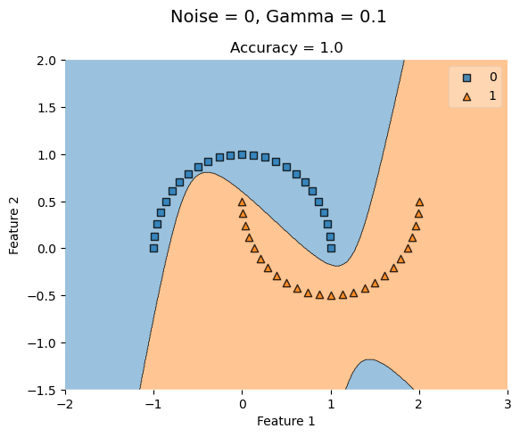
KLR_highG = KernelLogisticRegression(rbf_kernel, gamma = 100)
KLR_highG.fit(X_lowNoise, y_lowNoise)
plot_decision_regions(X_lowNoise, y_lowNoise, clf = KLR_highG)
t = title = plt.gca().set(title = f"Accuracy = {KLR_highG.score(X_lowNoise, y_lowNoise)}",
xlabel = "Feature 1",
ylabel = "Feature 2")
plt.suptitle('Noise = 0, Gamma = 100', fontsize=14, y=1)Text(0.5, 1, 'Noise = 0, Gamma = 100')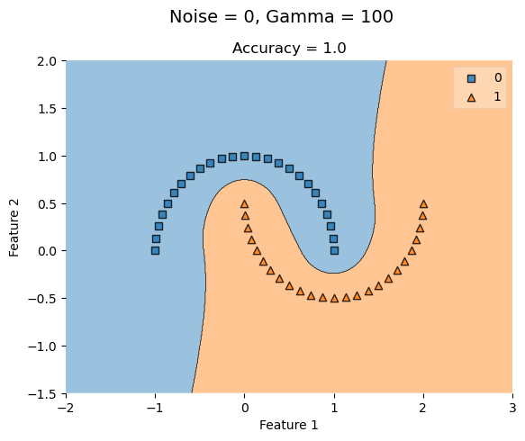
With no noise, a low gamma value (0.1) has a perfect accuracy and increasing it has no affect.
Noise = 1.0
X_highNoise, y_highNoise = make_moons(50, shuffle = True, noise = 1.0)
plt.scatter(X_highNoise[:,0], X_highNoise[:,1], c = y_highNoise)
labels = plt.gca().set(xlabel = "Feature 1", ylabel = "Feature 2")
plt.title("Testing Dataset, Noise = 1.0")Text(0.5, 1.0, 'Testing Dataset, Noise = 1.0')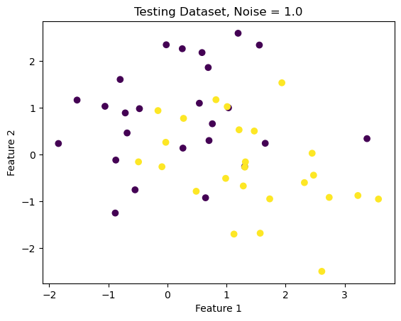
KLR_lowG = KernelLogisticRegression(rbf_kernel, gamma = 0.1)
KLR_lowG.fit(X_highNoise, y_highNoise)
plot_decision_regions(X_highNoise, y_highNoise, clf = KLR_lowG)
t = title = plt.gca().set(title = f"Accuracy = {KLR_lowG.score(X_highNoise, y_highNoise)}",
xlabel = "Feature 1",
ylabel = "Feature 2")
plt.suptitle('Noise = 1.0, Gamma = 0.1', fontsize=14, y=1)Text(0.5, 1, 'Noise = 1.0, Gamma = 0.1')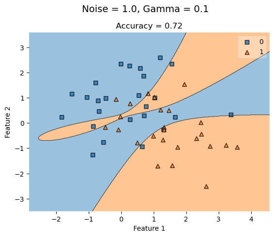
KLR_highG = KernelLogisticRegression(rbf_kernel, gamma = 100)
KLR_highG.fit(X_highNoise, y_highNoise)
plot_decision_regions(X_highNoise, y_highNoise, clf = KLR_highG)
t = title = plt.gca().set(title = f"Accuracy = {KLR_highG.score(X_highNoise, y_highNoise)}",
xlabel = "Feature 1",
ylabel = "Feature 2")
plt.suptitle('Noise = 1.0, Gamma = 0.1', fontsize=14, y=1)Text(0.5, 1, 'Noise = 1.0, Gamma = 0.1')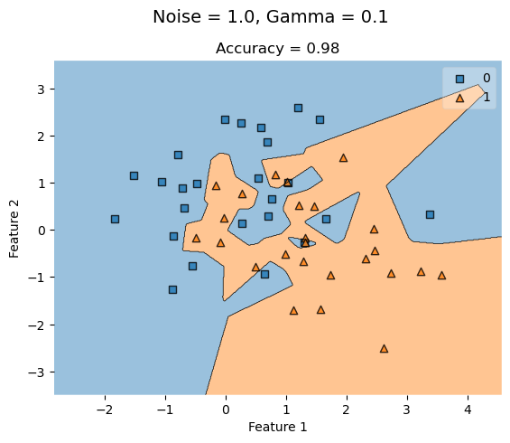
When we increase noise at 0.5, a low gamma value (0.1) yields a lower accuracy that improves as gamma increases to a higher value.
Concentric Circles Dataset
from sklearn.datasets import make_circles
X_c, y_c = make_circles(n_samples=400, factor=.8, noise=.05)
fig_c = plt.scatter(X_c[:,0], X_c[:,1], c = y_c)
xlab = plt.xlabel("Feature 1")
ylab = plt.ylabel("Feature 2")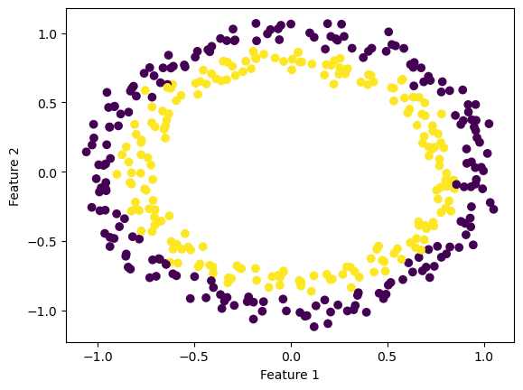
KLR_c_lowG = KernelLogisticRegression(rbf_kernel, gamma = 0.1)
KLR_c_lowG.fit(X_c, y_c)
plot_decision_regions(X_c, y_c, clf = KLR_c_lowG)
t = title = plt.gca().set(title = f"Accuracy = {KLR_c_lowG.score(X_c, y_c)}",
xlabel = "Feature 1",
ylabel = "Feature 2")
plt.suptitle('Gamma = 0.1', fontsize=14, y=1)Text(0.5, 1, 'Gamma = 0.1')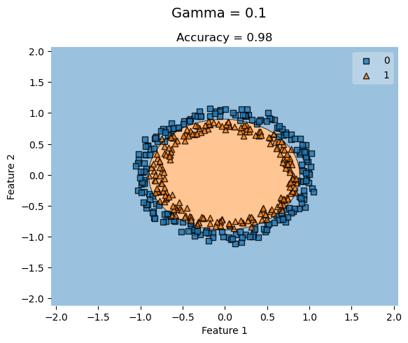
KLR_c_highG = KernelLogisticRegression(rbf_kernel, gamma = 100)
KLR_c_highG.fit(X_c, y_c)
plot_decision_regions(X_c, y_c, clf = KLR_c_highG)
t = title = plt.gca().set(title = f"Accuracy = {KLR_c_highG.score(X_c, y_c)}",
xlabel = "Feature 1",
ylabel = "Feature 2")
plt.suptitle('Gamma = 100', fontsize=14, y=1)Text(0.5, 1, 'Gamma = 100')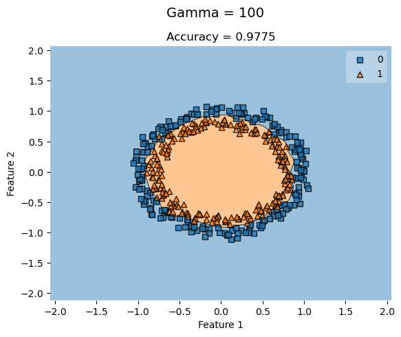
For concentric circle datasets where the features are closely concentric, a higher gamma value doesn’t always improve the accuracy of the classification. KLR with low gamma values still yield high accuracies that don’t necessarily improve by increasing the gamma.